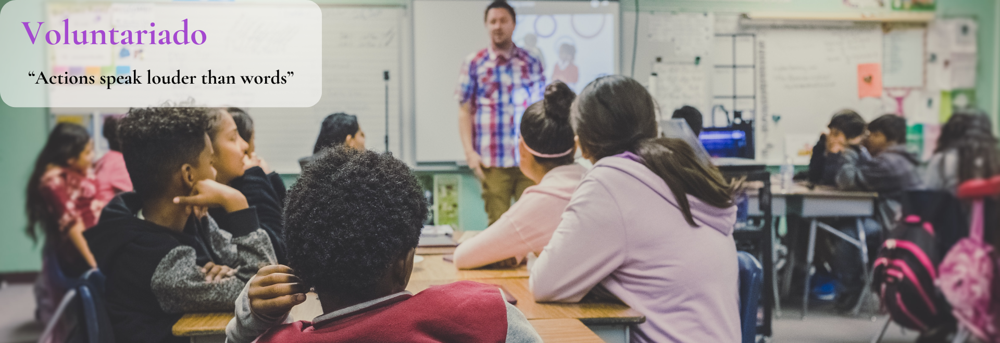

¿Qué hacemos?
Creamos e impartimos cursos y campamentos didácticos de áreas
STEAM para estudiantes de primaria y secundaria, con el propósito de elevar el
nivel académicode los estudiantes mexicanos.
A través de nuestras iniciativas de apoyo al movimiento, podemos llevar nuestros
programas de aprendizaje STEAM a todas las comunidades.
¡Sé parte de nuestra misión!
Actualmente, se han sumado 10 voluntarios por medio del proyecto Moldeando el Futuro del
Aprendizaje, que brinda a estudiantes del Instituto Tecnológico y de
Estudios Superiores de Monterrey la oportunidad de realizar su servicio social con
Logaritmia MX a través de áreas como diseño, programación y creación de modelos
de aprendizaje. Otro de nuestros voluntarios es Líder en Tecnologías de la
Información y ha aportado su experiencia para dar a conocer Logaritmia MX ante la
comunidad.
¡Conviértete en voluntario y conecta con personas
dispuestas a generar un impacto positivo en la comunidad a través de STEAM!
Logaritmia MX es considerada por el Instituto Tecnológico y de Estudios Superiores
de Monterrey como una Organización Socio Formadora
Contáctanos a voluntarios@logaritmiamx.com
La organización en números